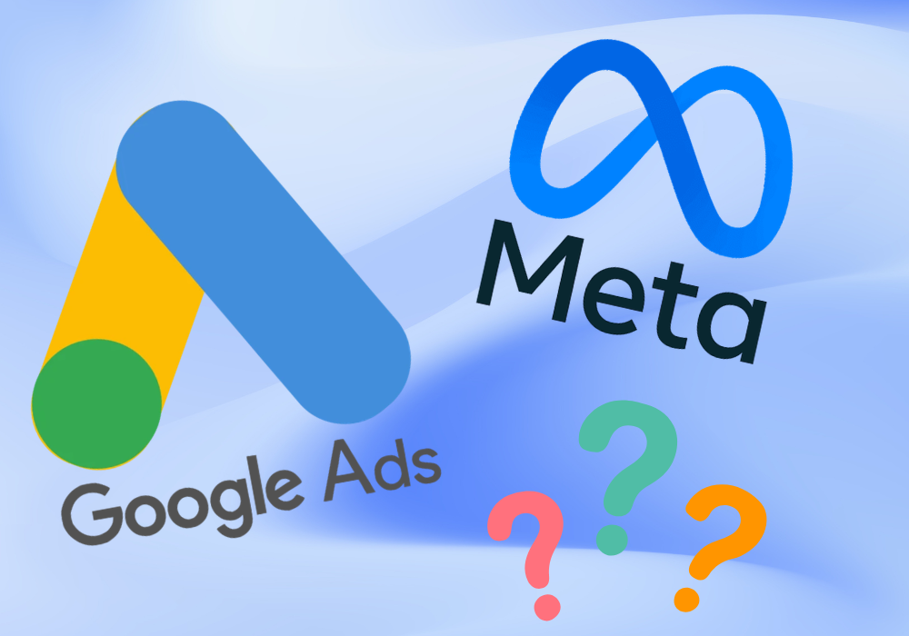

If you are thinking about paying to advertise your small business online, Facebook Ads and Google Ads are likely to be two of the first options you consider.
Both can help you reach potential customers. Both can also use up your budget without bringing in enough business if the campaign, offer or customer journey is wrong.
So which should you choose?
The answer starts with how people find and buy what you sell. A customer searching for an emergency repair is in a different situation from somebody discovering a local workshop while scrolling through Instagram.
What are we comparing?
When we refer to Facebook Ads here, we mean advertising through Meta, including Facebook and Instagram. These adverts can use images, video and other formats to introduce your business and encourage people to take action.
Google Ads covers several types of advertising. For this guide, we are focusing on Google Search ads: the sponsored results people can see when they search on Google.
Shopping, YouTube and other Google campaigns have different strengths and deserve their own discussion.
Google Search ads reach people who are already looking
Imagine somebody searches for “boiler repair Stockport” or “accountant for a small business Manchester”. They have already identified something they need and are looking for a business that can help.
A relevant Search advert can put your service in front of them at that moment.
This can make Google Search worth considering when:
- People already search for the service or product you offer
- You can serve a clearly defined area or type of customer
- Your website has a useful page that matches the search
- You have a clear route to an enquiry, booking or purchase
However, a search does not guarantee a sale. Somebody may be comparing prices, researching options or looking for information rather than a supplier.
The searches you target, the wording of your advert and the page people land on all need to work together.
Facebook and Instagram ads help people discover your business
On Facebook and Instagram, somebody might come across your advert while catching up with friends, watching videos or browsing content. They may not have been looking for your business at all.
Your advert needs to give them a reason to pause and pay attention.
Picture a local pottery studio promoting a beginners’ evening class. A short video showing the experience could introduce it to somebody who would enjoy going but had never thought to search for a pottery class.
Meta advertising is worth considering when:
- Your product, service or experience is easy to demonstrate visually
- You have a clear offer or a useful reason for people to enquire
- You want to introduce a business or service people may not know about
- You have photographs, videos or examples that explain the value
These campaigns can lead to enquiries and purchases as well as awareness. But someone discovering you for the first time may need more information and reassurance before they are ready to buy.
Start with the way your customers buy
Before deciding on a platform, think about what usually happens before somebody becomes your customer.
Do they need an immediate solution? Do they spend weeks comparing suppliers? Do they need to see your work before they understand what you offer?
Here are three examples of how that could influence your choice:
- A locksmith offering urgent call-outs: relevant local searches could be a sensible starting point because the customer has an immediate need.
- A studio launching a creative workshop: Facebook and Instagram could help introduce the experience through photographs and video.
- A garden design business: Search could reach people actively looking for a designer, while Meta could introduce completed projects to people considering changes to their garden.
These are starting points to investigate, rather than rules for whole industries. Search demand, competition, customer value and the strength of your offer can change the decision.
Which platform costs less?
There is no useful universal answer. Costs depend on the audience, competition, campaign setup, advert and action you want people to take.
A cheaper click does not necessarily produce a cheaper customer.
For example, imagine one campaign spends £200 and generates 20 enquiries, of which one becomes a customer. Another spends £200 and generates five enquiries, of which two become customers.
- Campaign one: £10 per enquiry and £200 in advertising spend per customer.
- Campaign two: £40 per enquiry and £100 in advertising spend per customer.
Those figures are hypothetical, but they show why judging a campaign by the cost of an enquiry alone can be misleading. You also need to understand whether those enquiries turn into worthwhile business.
When planning your budget, account for advertising spend, campaign management, creative production and any website work you need. These are separate costs even when they are included in one overall service.
What should a small business have ready first?
Before paying to bring people in, make sure you can give them a clear next step.
That means having:
- A specific offer: what are you asking somebody to enquire about or buy?
- A suitable destination: a relevant website page or an appropriate enquiry form.
- Reasons to trust you: genuine reviews, examples of work and clear business details.
- A working enquiry process: forms, phone numbers and booking links that you have checked on mobile.
- A follow-up plan: somebody responsible for responding and recording what happens.
- Useful measurement: a way to connect advertising activity with real enquiries and sales.
A landing page is simply the page somebody arrives on after clicking your advert. It should continue the conversation the advert started.
If you promote a particular service, sending visitors straight to a clear page about that service usually gives them less work to do.
The advert itself matters
Choosing a platform is only one part of the job.
A Search advert needs to relate to what somebody is looking for and explain why your business is worth considering. The campaign also needs ongoing attention to whether the searches bringing visitors are relevant.
On Facebook and Instagram, the image or video and the opening message need to make sense to somebody encountering you for the first time.
Real examples, a clear explanation and a credible offer give you something useful to test.
For either platform, avoid promising something the next step does not deliver. An advert offering a straightforward quote should lead to a straightforward way to request one.
Should you run both at once?
There can be a good reason to use both. A customer might first see your work on Instagram, then search for your business later when they are ready to get in touch.
However, you do not need to launch on both platforms to have a credible marketing plan.
If your budget and time are limited, starting with one focused campaign can make it easier to understand what is happening and make useful improvements.
Splitting a small budget across lots of services, audiences and platforms may leave you with too little information about any one approach.
Choose an initial campaign for a clear reason. Then consider adding another platform when you have evidence of what is working and a specific job for the new campaign to do.
How will you know whether it is working?
Decide what success looks like before the campaign goes live. For a service business, that might mean suitable enquiries, booked appointments and paying customers.
For an online shop, it may mean purchases and the value of those orders.
Useful questions include:
- Are we reaching people we can realistically serve?
- Are enquiries about the service we actually want to promote?
- How many enquiries turn into bookings or sales?
- What does it cost to gain a customer, including the wider campaign costs?
- Does the value of that business justify the investment?
Keep a simple record of enquiries and outcomes alongside your advertising reports. Platform figures are useful, but they do not always tell the whole story of how a customer found you.
Allow room to test and improve, with agreed review points and spending limits. There is no fixed number of days that guarantees a reliable result for every business.
So, Facebook Ads or Google Ads?
If people are already searching for what you offer, Google Search is worth investigating. If showing your work or introducing an experience is central to creating interest, Facebook and Instagram deserve consideration.
The right starting point depends on your customers, your offer, your budget and what happens after somebody responds.
For a small business in Manchester, Stockport or elsewhere in the UK, a focused campaign with a clear purpose is a more useful starting point than choosing a platform because another business says it worked for them.
At Piechart Digital, we help small businesses plan and manage Meta ads, Google Search campaigns and the websites that support them.
If you are weighing up your options, get in touch and tell us a little about your business and what you would like to achieve.
We can help you work out a sensible place to start.
← Back to blogs